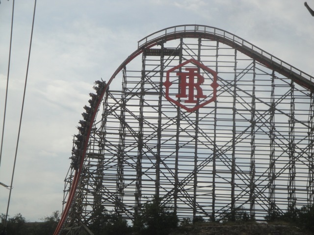
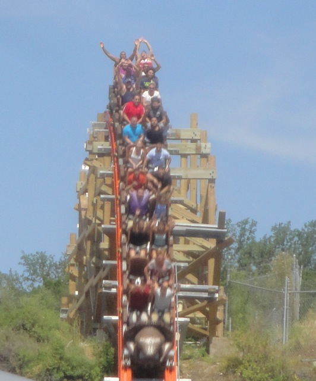
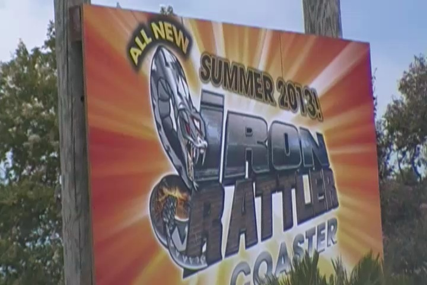
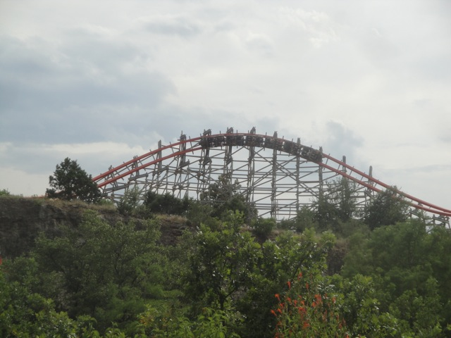
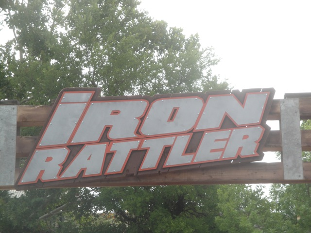

| |
Iron Rattler Review

Today at Incrediblecoasters, we're going to be reviewing Iron Rattler at Six Flags Fiesta Texas. Now this is a Rocky Mountain Makeover, where they take an old busted sh*tty wooden coaster and turn it into a kickass crazy steel coaster. Now the original ride looked...really interesting. I mean, just look at how it bends. But yeah. It sounded awful, and Iron Rattler is awesome!! Out with the old and in with the new!!! And yeah. It's a RMC, and RMCs are just amazing rides. So let's get in the cars, pull down the lap bars, and away we go. Now, it may be random, but I actually kind of prefer the original Gerslauter trains. But after the New Texas Giant accident, those trains are never coming on a new RMC ever again. We head around a sort of pre-dip, like that found on most B&M coasters before we climb the lifthill. As we climb on up, we actually get a really nice view of Six Flags Fiesta Texas, the quarry, and a couple fancy houses in San Antonio. All right. We've reached the top of the lifthill and are now heading down the first drop. Now if you're just looking at the first drop, it looks just absolutely INSANE!!! It's nearly vertical, but on top of that, it's got this wiggly wobbly bend to it, almost like you're about to get some laterals. Well, it's not quite as crazy as it looks, but even so, this first drop is just GREAT!!! It really gives you quite a lot of speed, and you just go flying afterwards. And there's a tiny bit of laterals, but nothing crazy that you're imagining. Oh, and BTW, TAKE THE SHED!!! We then rise up a big hill. Wee, here's a little bit of mild ejector air, and right above us is the Zero G Roll. Oh, man. That's going to be a lot of fun. We're now up on the top of the quarry, and we've got some funky laterals to go through. We go across this small, sort of wave element, as we're completely on our side, and it's just a ton of fun. You get a TON of laterals here. No worrying about a lack of those on the ride. Just make sure you don't completely slide to the side. =) We go through another one of those wave elements, except now we're spiraling straight down to the ground off the quarry. Oh, man. I just love this. I love it. I know some complain that the quarry part of the ride is dull. And maybe compared to what's coming up, but DAMMIT!! I just LOVE IT!!! We then head on up and into the Zero G Roll. SWEET!!! It starts out great with some whip, but in the end, this isn't really a Zero G Roll with whip. It just sort of sticks there and the world sort of just passes you by as you're upsidedown. It's a really funky and tingly feeling. We then head up a small hill. Wee, nice little pop of airtime. And then we go through some quarry funkiness as we go through a couple more of those wave hills that are totally banked. All right. Now this part of the ride, I can see where people call this the breather moment of the ride. The sideways hills are fun, but not really intense, though they also change direction and try and give us some laterals. Eh...that sort of works, but it's not really all that intense. But just wait, for now we're getting to the best part of the ride. A little bit more funkiness, and then...BAM!!! Drop off the quarry. Now this really gives us a nice amount of speed. And on top of all that, if you're in the backseat on this ride. During that drop, BAM!!! Strong Ejector Air!!! I just LOVE that drop. I love it so much. We then head through a tight curve at the bottom of the first drop, and TAKE THE TUNNEL!!! The tunnel is pretty cool as a nice light show is going on inside, as well as some mist. So we're all just having a blast at this time. But sadly, we pop out of the tunnel, rise up another small hill, get a little ejector air, and BAM!!! Brake run. This is the only complaint I have with Iron Rattler. It's too short. I feel like this ride should just keep on going. But for what the ride does have to offer, it is A LOT!!! And it all comes in a nice quick clean little package. I mean, you get that crazy first drop, a really nice swoopy Zero G Roll, that Quarry Drop with some strong EJECTOR AIR, and all sorts of cool little swoopy lateral bits and hills. It's just another really fun and really strong creation from Rocky Mountain Coasters. It's easily my favorite coaster in Six Flags Fiesta Texas, and I just can't wait to go back and ride it some more. I mean, we just kept back coming to Six Flags Fiesta Texas during the rest of our time in the city just to keep on riding this coaster. That should tell you just how much I like this ride.
9/10
Location: Six Flags Fiesta Texas
Opened: 2013
Built by: Rocky Mountain Coasters
Last Ridden: July 16, 2013
Iron Rattler Photos







Home
|